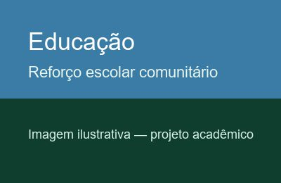
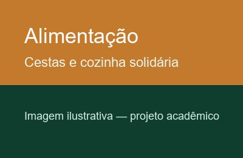
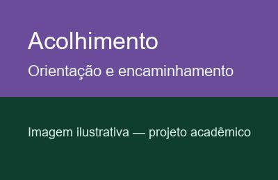

Educação na comunidade

Oficinas de reforço escolar, leitura e apoio a famílias com dificuldade de acesso digital aos serviços públicos.
Atuamos em educação, segurança alimentar e acolhimento familiar. Cada projeto é acompanhado por equipe local e relatórios periódicos para doadores e parceiros.

Oficinas de reforço escolar, leitura e apoio a famílias com dificuldade de acesso digital aos serviços públicos.

Campanhas de arrecadação, montagem de cestas e entrega em bairros priorizados pelo mapeamento social.

Atendimento psicossocial, encaminhamento a serviços públicos e apoio na regularização de documentos.
Voluntários atuam em mutirões, oficinas e logística de doações. Não é necessária experiência prévia em todas as funções.
Doações financeiras financiam cestas, material escolar e custeio de atendimentos. Também aceitamos doação de alimentos não perecíveis em campanhas específicas.
Preencha o cadastro para receber informações sobre voluntariado e campanhas de doação.